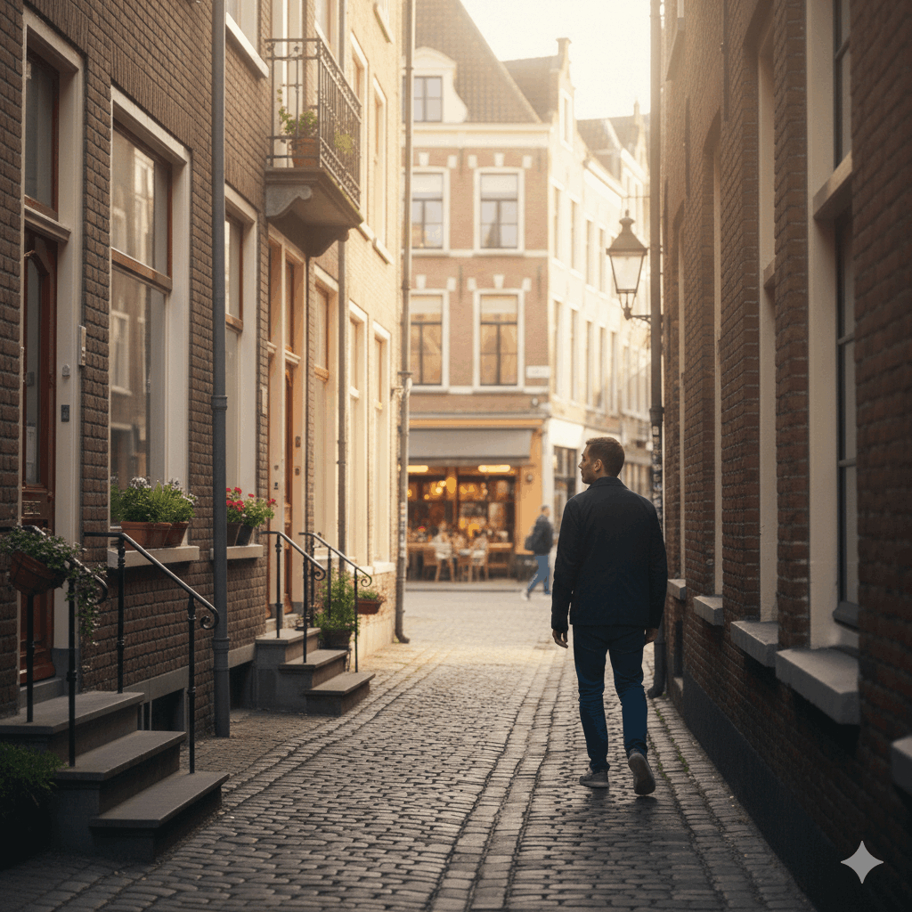

How it works
1. Choose Your Interest
by choosing what kind of experience you’re looking for — quiet walks, local cafés, culture, markets, or hidden neighborhoods. Instead of selecting a fixed package, you choose a direction that matches your mood and interests.
2. Connect With a Local Guide
You are matched with a local guide who shares similar interests. Together, you agree on a simple meeting point and a relaxed plan. The focus is on connection, not on performance.
3. Explore at Your Own Pace
Walk, talk, and discover the city naturally. There is no pressure to see everything — the goal is to experience something meaningful. By the end of the walk, the city feels less unfamiliar and more personal.